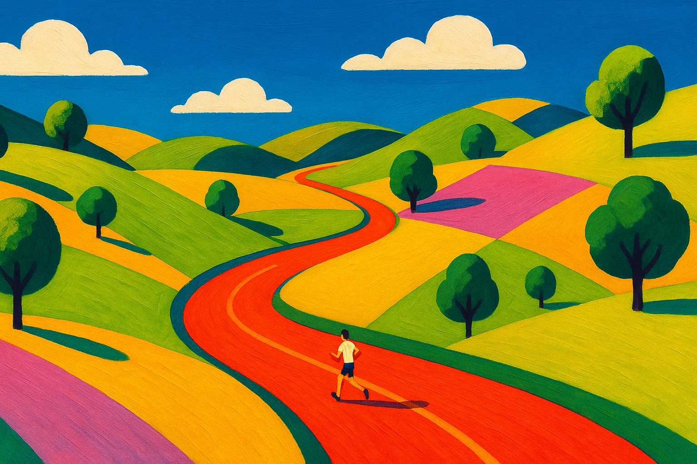
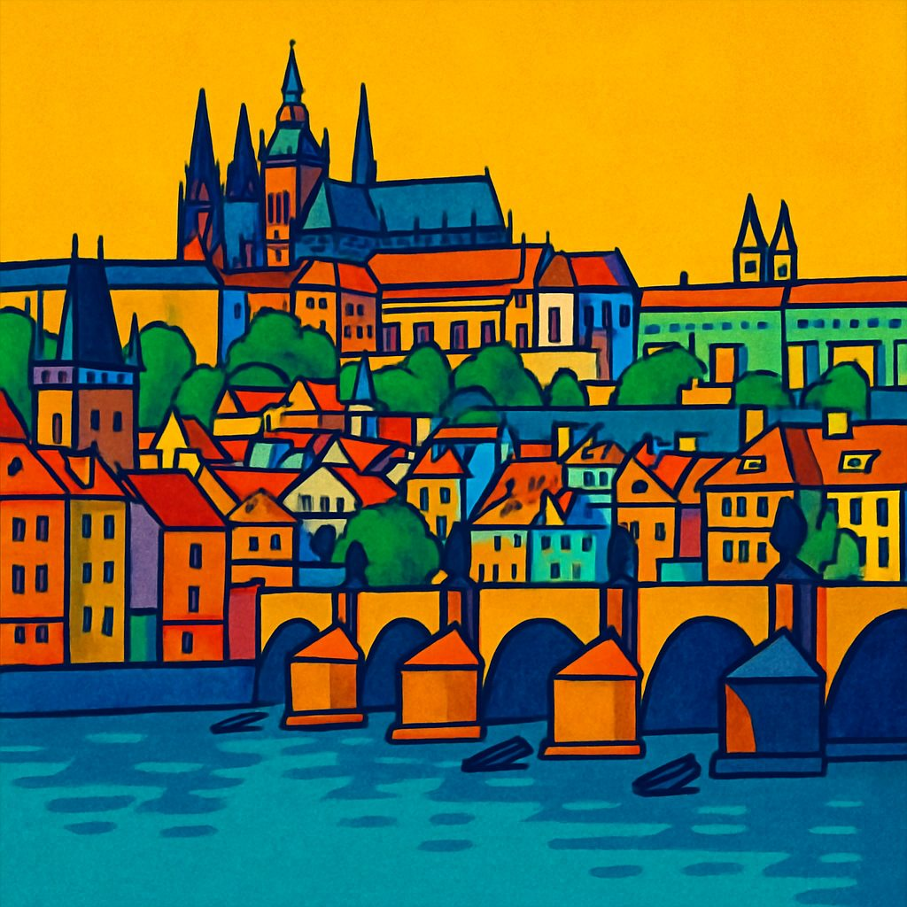
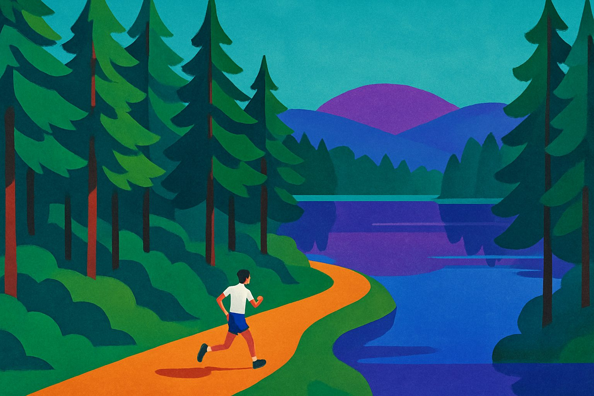

Stockholm, via Prague
Lukas Posolda
I turn data into decisions people actually make. Analyst and advisor by trade, real estate and finance by habitat, runner by default mode of transport.

The short version
I build decision material from data and get organisations to actually use it. Since 2007 I have moved across investment analysis, valuation, controlling and business development, the last nine years at Jernhusen, the company behind Sweden's railway stations. I built their BI platform from scratch, brought AI into the daily workflow, and publish a tips article for colleagues every week.
The industry has been real estate. The toolbox is universal: data, finance, pedagogy, and a stubborn urge to make the difficult simple. The best decision material is not the thickest, it is the clearest. Numbers should tell a story, otherwise they are just numbers.
A close friend once described me as a naive realist. I checked the numbers and he is right.
Prague → Stockholm, the long way
A career is a route, not a ladder. Mine starts by the Vltava and currently passes through Stockholm Central Station.

Prague
Departure
-
Until 2007
Charles University three degrees
MSc in Economics and Finance, plus bachelor's degrees in economics and international relations. Later a data science programme at London Business School. Detours along the way: Frankfurt, Nice, and a high school in Kansas.
-
2007–2010
Mint Investments Investment Analyst, then Business Developer
Real estate investments from the deal side. Due diligence and investment committee material for land acquisitions totalling 150,000 sqm, three development projects of 105,000 sqm from acquisition to zoning, and the turnaround of a distressed shopping centre in Slovakia. Built the firm's internal investment model.
-
2010–2011
Beleon Founder & CEO
My own company, delivering LED lighting solutions with financing included. Four manufacturers in Southeast Asia, projects saving 500,000 kWh per year, and every lesson about cash flow you can only learn with your own money.
Stockholm
Current station
-
2012–2017
Unibail-Rodamco Analyst, then Asset Manager
Moved country, changed language, kept the spreadsheet. Started by rebuilding the reporting, budgeting and forecasting processes, then managed a portfolio of six office properties, 65,000 sqm: budget, forecast, leasing and tenant negotiations.
-
2017–now
Jernhusen Senior Business Controller, then Head of Analytics
- Own the quarterly valuation of the whole portfolio since 2020, a journey from SEK 17.9 to 28 billion
- Built and launched the Power BI platform from scratch: 40+ reports, regularly used by 70% of the company
- Investment analysis for Centralstaden Stockholm, one of Sweden's largest urban development projects (over SEK 20 billion)
- Deals in 2026: initiated and delivered a disposal at 69% above book value, and ran the analysis for a SEK 200 million office acquisition
- Work directly with the CEO and CFO on strategy, and drive AI adoption across the organisation
A dashboard of a human
I have built 40+ reports about a property portfolio. Fair is fair, here is the report about me.
The portfolio I value every quarter. It was 17.9 when I started in 2020.
Built from scratch, used regularly by 70% of the company.
Working order: Swedish, English, French. Czech from the factory.
The count only goes up. Trail preferred.
I lost count. My 11-year-old is at 30 and I am well ahead of him.
One tips article every week since 2024. BI, AI, real estate.
I once reported 314 birds detected at three railway stations by an AI dashboard. Published on April 1st. The dashboard was real, the birds were not, and I still got invited to an AI conference because of it.
Things I wrote that people read
I write on LinkedIn about real estate, data and AI, usually starting from a story. A selection:
The longest answer is always right!
What my driving test taught me about AI-generated quizzes, and why models replicate badly designed tests.
AI · EnglishÄpple eller kanelbulle?
Can a cinnamon bun beat Apple on sales per square metre? Back-of-envelope retail analytics with Swedish fika.
Retail · SwedishCoffee and trains. Together for over a century.
A 1922 poster, Jeff Bezos, and why cafés occupy the best retail spots in stations.
Real estate · EnglishAre you trying to electrocute an elephant?
Edison, Topsy and the AI debate: why public executions of proverbial elephants do not disturb me.
AI · EnglishMight breaking up with my AI mean losing the memories?
From BlackBerry to Fitbit to ChatGPT: ecosystem lock-in, next generation.
AI · EnglishSka vi ta en k... eh, löpprunda?
My first running meeting, and an open invitation. 47,000 people read this one.
Running · SwedishPlus the occasional column for Förvaltarforum, and a tips article for colleagues every week since 2024.
Built after hours
I like building things, lately with AI as a colleague. Most of it is for my two sons, who are the toughest product reviewers I know. All of it is live.
Adventure games
A Greek mythology roguelike, a point-and-click journey on the river of forgetting, a walk through the history of Swedish democracy. Playable in the browser.
Play themThe quiz machine
School quizzes generated from photos of textbooks: 50 questions apiece, saved progress, custom icons. Study support that actually gets used.
Try a quizThis website
Concept, copy, code and the paintings: made with AI, decided by a human. The source is public.
View sourceMovement, mostly

- Running. My default mode of transport. To work, to meetings, to think. If we need to talk, we can also run.
- Travel. The more countries the better, by train when the map allows it.
- Second-hand. Circularity in practice: too much gets thrown away with plenty of life left. I once gave a bar talk about it and walked away with a book.
- Scouts. Recruitment lead at the local scout group.
- Blood donor since 2003.
- Cross-country skiing, cooking, literature. Ideally not all on the same evening.
The finish line is just the next start
If you want to talk real estate, analytics, AI or business development, my inbox is open. If you would rather talk at conversational pace on a running trail, even better.